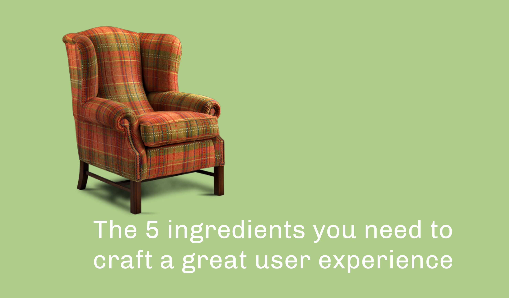
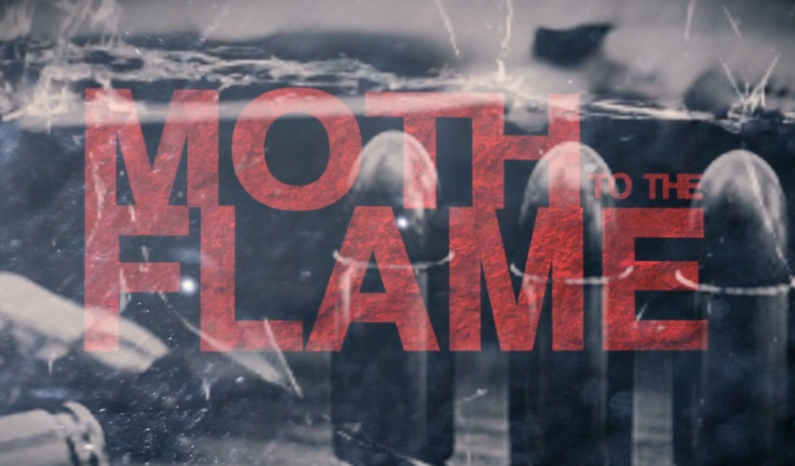

... and it got featured in the UX Collective!
I wrote the bulk of this on a whim of inspiration one afternoon.
An excerpt:
If you’re like me — a UX designer — you get asked to describe user experience quite often by colleagues, clients, friends and your interested-but-still-unable-to-fathom-it mother. I used to find it difficult to describe UX in a succinct way. I would stumble over words and my hands would swing in the air as I gesticulated dramatically to demonstrate interactions and flow and layout. Basically… I had no easy way to describe a good user experience...
... which placed in the top 4 of the LA-based Filmaka Fantasy Web Series competition!
Warning: contains a scary scene with a demon.
© Andi Parker. All rights reserved.